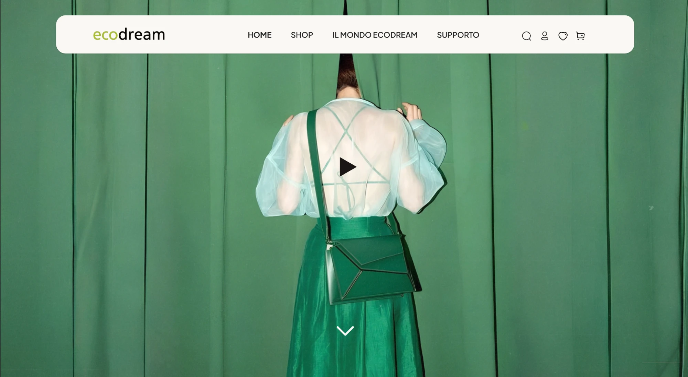
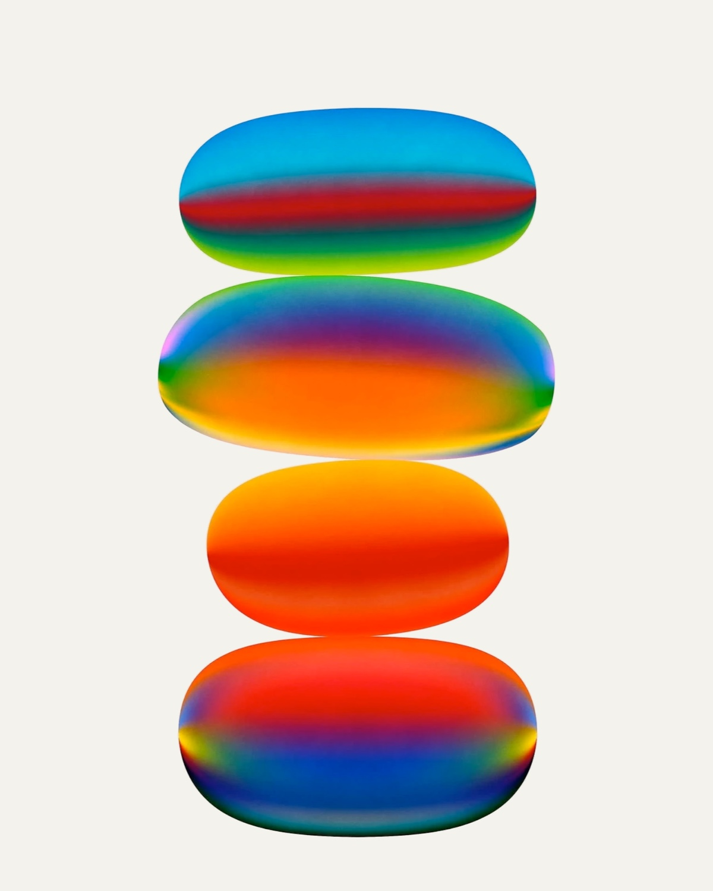

UX/UI Redesign
Ecodream
2026
Il restyling di un sito web datato: ho ripensato da zero l'esperienza utente e ridisegnato completamente l'interfaccia.
Manuel Facen
UX & UI design
Commissionato da Start2Impact

Disponibile per nuovi progetti
Il design è il filo conduttore del mio percorso: dalla grafica al prodotto fisico, fino alla UX/UI.

(Scorri per esplorare)
UX/UI Redesign
2026
Il restyling di un sito web datato: ho ripensato da zero l'esperienza utente e ridisegnato completamente l'interfaccia.
Manuel Facen
UX & UI design
Commissionato da Start2Impact

UX/UI Design · Sito web
2026
Il sito di un festival musicale organizzato con un gruppo di amici: progettato da zero per raccontare line-up, programma e informazioni pratiche.
Manuel Facen
UX research & UI design
Progetto personale

UX/UI Design · Template Framer
2026
Un template Framer efficace per il portfolio dei designer: mette in primo piano i progetti e la loro descrizione, senza le sezioni che i recruiter non guardano.
Manuel Facen
UX & UI design, Framer
Progetto personale
Hai un progetto in mente?